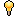

Eleesha - Premiers pas
Eleesha est un personnage assez polyvalent car, à son réveil, elle n'est occupée par aucune tâche précise requérant sa présence. Mais, ses réflexes de journaliste ont la vie dure. Le "Mush" est l'affaire de sa vie !
En vraie détective, comme du temps de Columbo, Monk, et même Navarro, elle sera à l'affût des moindres comportements suspects ! Avec cette enquêtrice de choc, les mushs n'ont qu'à bien se tenir car munie de son calepin, elle aura l'œil pour les débusquer.
 Même
si Eleesha n'est pas la seule à enquêter contre le mush, elle y
consacre une grande partie de son temps. De ce fait, son rôle
d'enquêtrice peut être difficile à maîtriser. Il est conseillé de bien
connaitre les bases du jeu avant d'incarner notre reporter sans
frontière.
Même
si Eleesha n'est pas la seule à enquêter contre le mush, elle y
consacre une grande partie de son temps. De ce fait, son rôle
d'enquêtrice peut être difficile à maîtriser. Il est conseillé de bien
connaitre les bases du jeu avant d'incarner notre reporter sans
frontière.
 Compétences :
Compétences :
Traqueur (lvl 1) :
Cette compétence est spécifique à Eleesha.
• Accès complet aux historiques de déplacement.
• Permet d'imprimer la liste secrète sur la Tabulatrice.Vous êtes une enquêtrice de choc et de charme. Vous traquez les mushs de pièce en pièce. Cette compétence vous permettra de : Voir les logs durant 16 cycles (au lieu de 8 cycles), pour mieux
analyser les déplacements de chacun. De plus, Traqueur vous montrera les
pièces d'entrée et de sortie de chaque équipier. Plutôt pratique pour
suivre ceux qui vous paraissent suspects.
Voir les logs durant 16 cycles (au lieu de 8 cycles), pour mieux
analyser les déplacements de chacun. De plus, Traqueur vous montrera les
pièces d'entrée et de sortie de chaque équipier. Plutôt pratique pour
suivre ceux qui vous paraissent suspects. D'imprimer "La liste d'Eleesha" grâce à la tabulatrice qui se trouve
sur le pont. Elle dévoile 8 noms au J1 dont le nom d'un mush alpha
(parfois, le 2e alpha peut y figurer ; un alpha déjà mort peut également
y apparaître). La liste des noms se réduit d'un nom par jour, à vous de
choisir le bon moment d'impression. Imprimer la liste n'est possible qu'une seule fois par partie.
D'imprimer "La liste d'Eleesha" grâce à la tabulatrice qui se trouve
sur le pont. Elle dévoile 8 noms au J1 dont le nom d'un mush alpha
(parfois, le 2e alpha peut y figurer ; un alpha déjà mort peut également
y apparaître). La liste des noms se réduit d'un nom par jour, à vous de
choisir le bon moment d'impression. Imprimer la liste n'est possible qu'une seule fois par partie.
 AstuceLorsque vous pensez qu'il n'y a plus de mushs et que vous n'avez jamais imprimé la liste, vous pouvez vérifier si l'éradication est complète : si la tabulatrice ne peut rien imprimer, il n'y a plus de mushs.
 Persévérant (lvl 2) :
Persévérant (lvl 2) :
Autre personnage ayant cette compétence : Hua (5).En cas d'échec sur une action, le % de chance de réussite augmente plus vite.La
réussite, ça vous connaît. Vous améliorez votre taux de réussite à
chaque échec de x1.3, au lieu de 1.25 (Ex: Frapper sans persévérant :
60% -> 75%. Frapper avec Persévérant: 60% -> 78%). Cette
compétence est des plus efficaces pour des taux de réussites les plus
bas et très pratique pour abattre un mush ou faire des réparations
d'urgence.
Observateur (lvl 3) :
Cette compétence est spécifique à Eleesha.
• L'action Fouiller vous coûte 1 PA ( ) de moins.
) de moins.
• Vous avez 25% de chance de détecter les actions furtives de votre pièce.Vous êtes une caméra ambulante, ou presque. Votre touffe de cheveux cache en réalité une caméra portative. Vous avez 25% de chance de détecter les actions furtives et discrètes
de votre pièce (dont les actions mushs comme des poinçons). Vous pouvez
donc tenter de sécuriser une pièce par votre simple présence, mais à vos
risques et périls. Pour plus d'informations, c'est par ici.
Vous avez 25% de chance de détecter les actions furtives et discrètes
de votre pièce (dont les actions mushs comme des poinçons). Vous pouvez
donc tenter de sécuriser une pièce par votre simple présence, mais à vos
risques et périls. Pour plus d'informations, c'est par ici. Le coût de l'action fouiller est gratuite (au lieu d'1 PA), assez utile
si vous ne trouvez pas la souche de test Mush ou un autre objet
important pour le voyage.
Le coût de l'action fouiller est gratuite (au lieu d'1 PA), assez utile
si vous ne trouvez pas la souche de test Mush ou un autre objet
important pour le voyage.
 Informaticien (lvl 4) :
Informaticien (lvl 4) :
Autres personnages possédant cette compétence : Janice (2), Frieda (4), Terrence (5).
• +2 Points d'Informatique () par jour.
• Double la Réussite au Bidouilleur.Vous êtes experte en informatique. Vous pouvez allier relais et enquête sans trop vous dépenser car cette
compétence vous donne 2 points informatique qui remplacent n'importe
quelle action aux scans, à la communication, pour les recherches et les
projets (soit une économie de 4 PA / Jour).
Vous pouvez allier relais et enquête sans trop vous dépenser car cette
compétence vous donne 2 points informatique qui remplacent n'importe
quelle action aux scans, à la communication, pour les recherches et les
projets (soit une économie de 4 PA / Jour). Armée du bidouilleur, vous pourrez également accéder aux terminaux
(commandement sur le pont et le terminal Bios au Nexus) plus aisément.
Armée du bidouilleur, vous pourrez également accéder aux terminaux
(commandement sur le pont et le terminal Bios au Nexus) plus aisément.
Technicien (lvl 5) :
Autres personnages possédant cette compétence : Terrence (2), Raluca (3), Hua (4) et Kuan Ti (4).
• +1 Point de Réparation ( ) par jour.
) par jour.
• Chance de réussite doublée pour les Réparations.
• Chance de réussite doublée pour les Rénovations.Vous
adorez le cambouis, l'huile de moteur et les engrenages. Avec cette
compétence, vous devenez un as de la clef à molette ! Technicien est un
rôle vital pour le vaisseau dont l'entretien se corse de jour en jour. Vous avez des bonus pour les réparations, mais également pour avancer le pilgred et d'autres projets au nexus.
Vous avez des bonus pour les réparations, mais également pour avancer le pilgred et d'autres projets au nexus. Lorsque la compétence est activée, vous commencez avec 2 points
technicien (qui remplacent 1 action pour réparer/démonter). Vous gagnez 1
point tech par jour (mais la limite de 2 ne peut être dépassée).
Lorsque la compétence est activée, vous commencez avec 2 points
technicien (qui remplacent 1 action pour réparer/démonter). Vous gagnez 1
point tech par jour (mais la limite de 2 ne peut être dépassée).
Polymathe (lvl 6) :
Cette compétence est spécifique à Eleesha.• +2 canaux privés accessibles.
• +1 point informatique par jour.
• -10% à toutes vos tentatives d'action.Pour mener l'enquête, rien de tel que de faire jouer votre carnet d'adresse. Avec cette compétence, vous disposerez de deux canaux supplémentaires
pour discuter avec vos coéquipiers. Bien utile pour garder un œil sur
les activités de chacun et pour croiser les informations.
Avec cette compétence, vous disposerez de deux canaux supplémentaires
pour discuter avec vos coéquipiers. Bien utile pour garder un œil sur
les activités de chacun et pour croiser les informations. Vous pouvez également accumuler 1 point informatique supplémentaire. Vous saurez vous rendre utile pour des relais.
Vous pouvez également accumuler 1 point informatique supplémentaire. Vous saurez vous rendre utile pour des relais. Malheureusement ce multitâche vous fera perdre 10 % de réussite au % de base (hors projets et recherches).
Malheureusement ce multitâche vous fera perdre 10 % de réussite au % de base (hors projets et recherches).
 Styles de jeu et combinaisons de compétences, quelques propositions :
Styles de jeu et combinaisons de compétences, quelques propositions :
Ils dépendent de votre mode de jeu : bronze (1 slot compétence), argent (2 slots) ou or (4 slots).
Eleesha Enquêtrice :
- Traqueur ou Observateur : comme expliqué plus haut, vous vous baladez dans le vaisseau à l'affût des mushs. N'hésitez pas à vous munir de la trottinette. Après la traque du mush, reconvertissez vous en relayeuse, ou demandez un apprentron, tout est bon pour vous occuper.
- Traqueur + Observateur : Vous êtes experte en la matière, rien ne vous échappe. Vous pistez le mush mieux que quiconque. Pour avoir le respect de l'équipage, vous devrez faire vos preuves en exterminant la vermine à bord !
- Polymathe : combinée à traqueur et / ou observateur, cette compétence vous rend ultra-présente dans l'enquête. Vos équipiers entendront parler de vous !
Eleesha "Bonne à tout faire" :
Plusieurs choix s'offrent à vous, mais vous serez moins bien armée pour l'enquête.
- Persévérant : Vous voulez réussir tout ce que vous entreprenez. Seule, cette compétence vous sera peu utile, sauf pour éliminer un nuisible. Essayez de vous procurer un apprentron technicien, il sera alors exploité au mieux.
- Informaticien : Vous êtes confirmée en qualité
de chercheur. Vos relais aux recherches (labo) et aux projets (nexus)
seront forts appréciés par vos compagnons. N'hésitez pas, non plus, à
faire un détour au pont pour remettre la liaison, bidouiller, ou donner
un coup de main à l'astro. Si vous êtes la nouvelle
 Responsable Comm, cette compétence vous facilitera la vie.
Responsable Comm, cette compétence vous facilitera la vie. - Technicien
: Vous en avez marre de l'enquête, vous préférez ramper dans l'huile de
moteur. Armée de la clef à molette, vous êtes la reine des réparations.
N'hésitez pas à prêter mains fortes à Raluca pour son PILGRED.
Combinée avec Persévérant, cette compétence sera des plus efficaces. - Informaticien + Technicien : Vous êtes une touche-à-tout. Vos compétences vous procurent des bonus conséquents sur une majeure partie des projets du Nexus ce qui fait de vous une relayeuse hors pair. Vous pourrez allier relais et réparations avec ce combo de compétences.
- Polymathe : avec vos -10% de réussite pour vos tentatives d'action (hors projets et recherches), ce n'est pas forcément la compétence idéale pour briller d'efficacité...
Eleesha "Couteau Suisse" :
Pour jouer comme proposé ci-dessous, il vous faut 4 slots compétences disponibles (mode Or).
- Couteau suisse Enquête : Traqueur, Observateur, + Persévérant/Informaticien/Technicien.
Vous alliez Enquête et Travail. Une fois les mushs éliminés, vous aurez votre temps libre pour vous atteler à la tâche que vous avez choisie. - Couteau suisse Travail à plein temps : Technicien, Informaticien, Persévérant, + Traqueur/Observateur.
Vous mettez au second plan l'enquête pour améliorer la vie du vaisseau. Mais, cela ne vous empêche pas de vous balader pour aider l'équipage et de jeter un œil de temps en temps à ce qu'il se passe.
En résumé : Bien que les compétences traqueur et observateur soient très utiles pour mener l'enquête, elles ne sont pas obligatoires. Testez les combinaisons et choisissez celle qui convient le mieux à votre style de jeu.
Il peut arriver qu'en tant qu'Eleesha vous deveniez Responsable Comm. :
Vous êtes 2e dans l'ordre d'accession au titre.
Si Paola devient inactive ou est tuée, il vous faudra prendre le relais sur le pont. C'est un rôle qui peut vous handicaper pour mener l'enquête car il vous demandera beaucoup d'énergie.
C'est pourquoi, arrangez vous avec le reste de l'équipage pour déterminer vos objectifs à la Comm. (ex : ne contacter que les bases moral et nourriture ; ne pas faire les Maj. NERON ; choisir de poursuivre le décodage de Xyloph ou pas).
En résumé : Tout dépendra du travail effectué par Paola avant vous, de l'issue de la partie et des besoins de l'équipage.
- Dans toutes les pièces du vaisseau ou les plus à risque (selon le contexte) pour mener l'enquête.
Ne pas hésiter à se munir de la trottinette pour économiser son énergie (Ajoute 2 PM ( ) lors des transferts - au passage d'une porte).
) lors des transferts - au passage d'une porte). - Au nexus, au labo ou sur le pont pour relayer.
- En dortoir pour dormir.
Une tigresse plutôt Lion...Mush, t'es mal tombé!
Pour aller plus loin : Tutoriel sur l'enquête
Tutoriel sur la mécanique